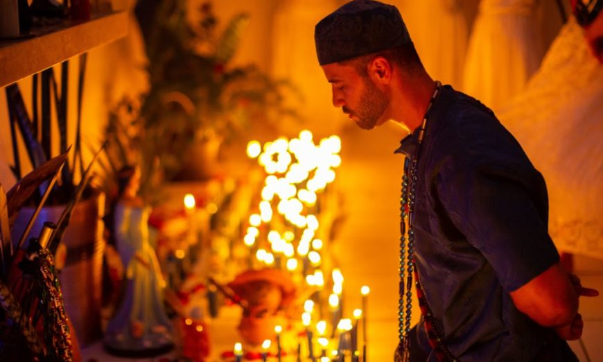

Em segundo lugar no ranking da SDH, com 27% das denúncias com identificação, está a religião evangélica, praticada, segundo o Censo, por 22,2% da população brasileira. O coordenador explica que o racismo está também na discriminação contra os evangélicos. "A religião que tem mais negros e pardos é a evangélica, em termos quantitativos. E é uma religião muito presente entre os setores mais pobres e entre a população negra", diz. "A intolerância religiosa pode ser entendida como a extrapolação de uma intolerância maior existente no país, relacionada ao racismo, à pobreza e à desigualdade social."
Cerca de 260 milhões de cristãos foram "severamente perseguidos" em todo mundo em 2019, um número crescente, embora a quantidade de fiéis mortos por causa de sua fé tenha diminuído - revela um relatório da ONG Open Doors. No total, 260 milhões de cristãos - católicos, ortodoxos, protestantes, batistas, evangélicos, pentecostais - foram "severamente perseguidos", contra 245 milhões em 2018, segundo a organização.
O evangelicalismo, evangelismo ou cristianismo evangélico é um movimento cristão protestante surgido no século XVII, depois da Reforma Protestante, tornando-se uma vertente organizada com o surgimento, dos metodistas entre os anglicanos, dos puritanos entre os calvinistas e Igrejas Reformadas, ambos na Inglaterra e dos pietistas entre os luteranos na Alemanha e Escandinávia.
O movimento tornou-se ainda mais significativo nos Estados Unidos da América durante o Grande Despertamento dos séculos XVIII e XIX, onde conseguiu muito mais membros do que na Europa. O movimento continua a atrair adeptos em nível mundial no século XXI, especialmente no mundo em desenvolvimento. É um movimento que reúne vários submovimentos, como a Igreja Batista, Pentecostalismo, Movimento Carismático, Cristianismo não denominacional.
O evangelicalismo desenfatiza o ritual e enfatiza a piedade do indivíduo, exigindo-lhe que cumpra certos compromissos ativos, incluindo:
Nas igrejas evangélicas, o culto é visto como um ato da adoração de Deus na vida da Igreja. Não há liturgia e a concepção do serviço de adoração é mais informal. Normalmente é dirigido por um pastor cristão. Geralmente contém duas partes principais, o louvor (música cristã) e o sermão, e periodicamente a Santa Ceia.
Uma pesquisa sobre intolerância, realizada pelo Instituto Ipsos Mori em 27 países, aponta o Brasil como 7º país mais intolerante dentre estes, no âmbito político, religioso ou social. A pesquisa aponta que um dos motivos é que discursos racistas e de ódio, que há alguns anos eram combatidos, passaram a ser bem vistos, e assumidos, por uma parcela considerável de usuários das redes sociais, disseminando este tipo de conteúdo.
Para o historiador Julio Cesar Chaves, doutor em Ciências da Religiões pela Université Laval e professor da UPIS - Faculdades Integradas, há uma “banalização de conceitos”. “Há países em que o cristianismo é ilegal, como na Arábia Saudita. Nesses países, existe, sim, uma perseguição ferrenha aos cristãos. Cristãos são mortos por serem cristãos, sequestrados, torturados, executados… Nada disso acontece no Brasil. Se eu uso a palavra cristofobia para ficar me referindo a post de internet… Tudo bem, eu posso até usar esse termo, mas aí eu vou usar qual termo para falar sobre o que acontece com os cristãos no Oriente Médio?”, questiona.
Na visão dele, o que há no Brasil é um discurso de ódio que parte sobretudo da mídia e de usuários influentes em redes sociais. “É inegável que existe, hoje, no Brasil, certo discurso de ódio de alguns setores em relação aos cristãos – de maneira mais específica, em relação aos evangélicos e, de maneira mais específica ainda, em relação aos neopentecostais”, afirma.
XXX
XXX
Em referência aos dados mostrados anteriormente a ONG Open Doors relatou: "Este aumento pode ser explicado, em particular, pela deterioração da situação da liberdade religiosa na China em nível nacional, afetando cada vez mais regiões, e pela implantação do jihadismo na África", escreve a ONG.
Sendo que, por "perseguição", a ONG entende toda e qualquer violência, que pode chegar ao assassinato, começando por uma opressão diária mais discreta.
É certo que não podemos mudar a história e tudo de ruim que já aconteceu, como guerras, atentados, mortes e todo o sofrimentos que a intolerância religiosa já causou. Porém, o presente e o futuro estão sendo construídos.
Combater qualquer tipo de discriminação é uma das maiores urgências que a sociedade tem. Com bilhões de pessoas no mundo e tantas culturas diferentes, não podemos esperar que isso aconteça do dia para a noite.Por mais que seja um grande desafio, pequenas iniciativas e atitudes fazem toda a diferença. A seguir, temos algumas sugestões do que pode ajudar a combater a intolerância religiosa.
Uma das motivações da intolerância em seus mais diversos sentidos é a falta de respeito aos direitos individuais, em especial à liberdade. Todos somos livres para fazer certas escolhas e a religião deve ser uma delas. Portanto, defender esse posicionamento é essencial para atuar nesse combate.
Já a informação é a principal ferramenta para conscientizar as pessoas. O esclarecimento das questões envolvidas em casos de intolerância é fundamental para que as novas gerações tenham um comportamento diferente, livrando-se do passado radical, conflituoso e sangrento. Ou seja, todos nós podemos divulgar dados e histórias que estimulem a reflexão sobre esse contexto. O conhecimento e o diálogo são muito poderosos para criar um mundo menos intolerante.
Na visão do sacerdote umbandista, Alan Barbieri, que também é graduando em Psicologia, acredita em estratégias que consideram o viés psicológico para combater a intolerância religiosa, apelando para o lado racional, através de argumentos, e crendo que o melhor combate é o diálogo e a informação: “Cabe aos líderes de cada uma das religiões começarem a propagar o bem entre as pessoas, incentivando o contrário do preconceito e discriminação, através de diálogos e discursos que promovam a paz e o respeito mútuo”.
Na imagem Alan Barbieri
O sacerdote também aponta que muitas vezes, o preconceito e a intolerância não são explícitas, mas podem ser sentidas: “Na maior parte dos casos o preconceito e a intolerância é velada, até por conta de hoje ser crime, logo as pessoas ponderam mais seus julgamentos na hora de falar em público, mas não mudam sua mentalidade. Mas o umbandista sofre, muitas vezes, no seu ambiente familiar, no seu ciclo de amizades, na empresa que trabalha ou em uma entrevista de emprego, crianças na escola ou jovem na faculdade. Você pode dizer: Sou católico, evangélico, budista, judeu, etc. Mas dizer que é umbandista pode ser uma ameaça ao bem estar social, na visão de alguns”, conclui.
Além de sacerdote umbandista, Barbieri influenciador digital, sendo o maior youtuber de Umbanda do Brasil, com cerca de 412 mil inscritos em seu canal e mais de 25 milhões de visualizações em seus vídeos, além de 100 mil seguidores no Instagram. Seu discurso de paz e de promoção do respeito mútuo tem chamado atenção não apenas dentro do segmento espírita, mas recebido apoio até mesmo de pastores evangélicos e padres católicos.
Canal do Alan Barbieri no YouTube.